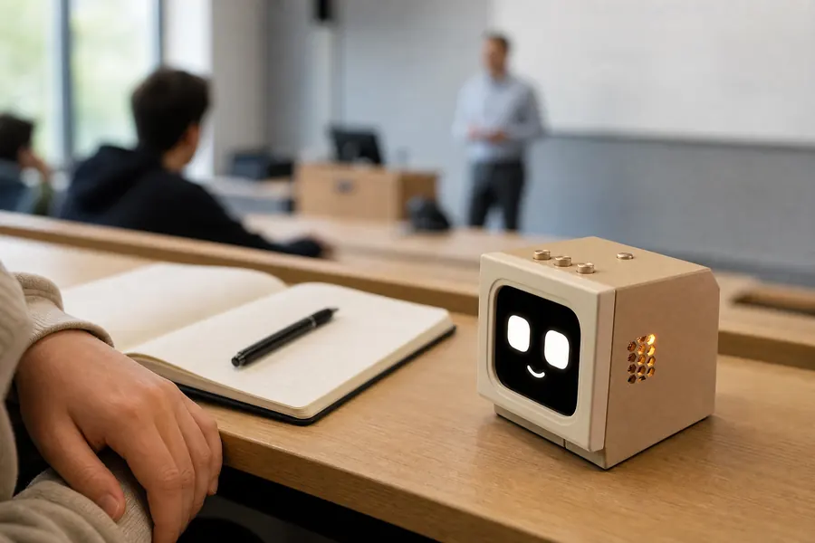
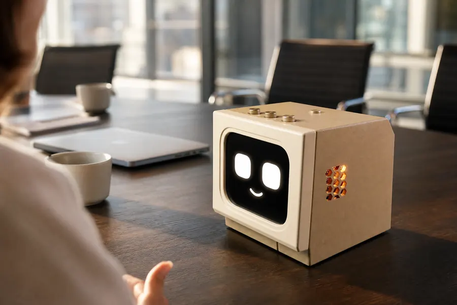
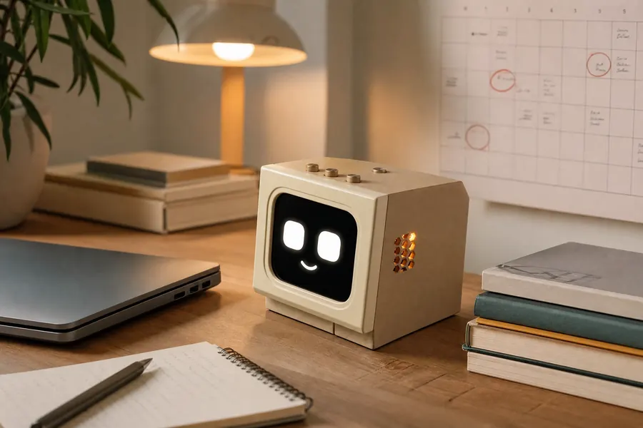
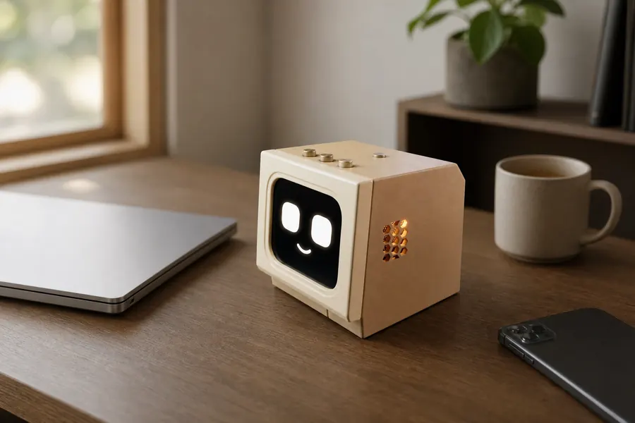
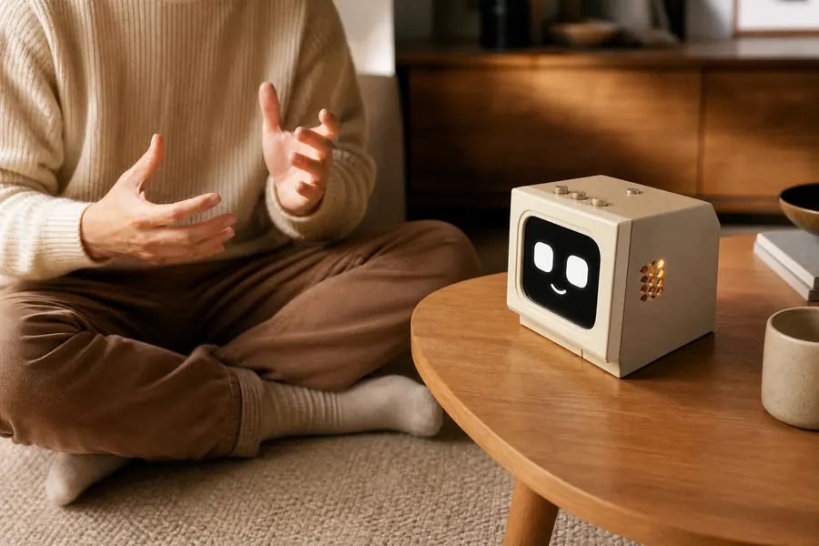
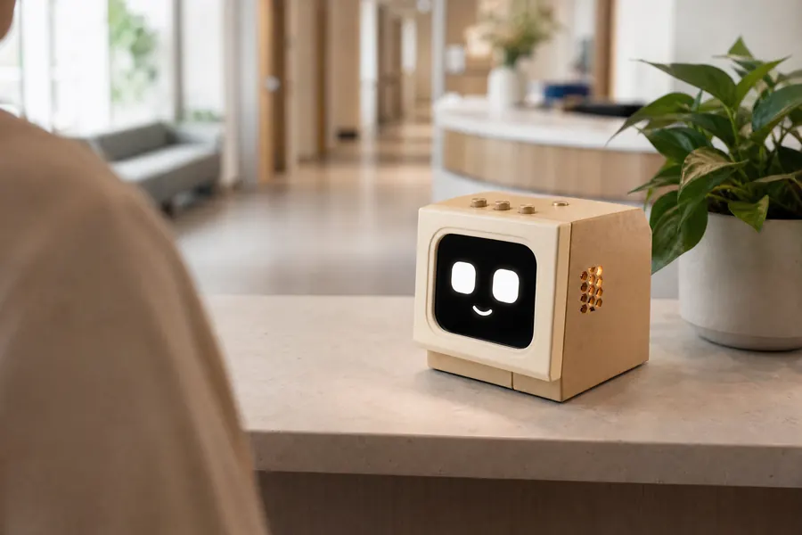
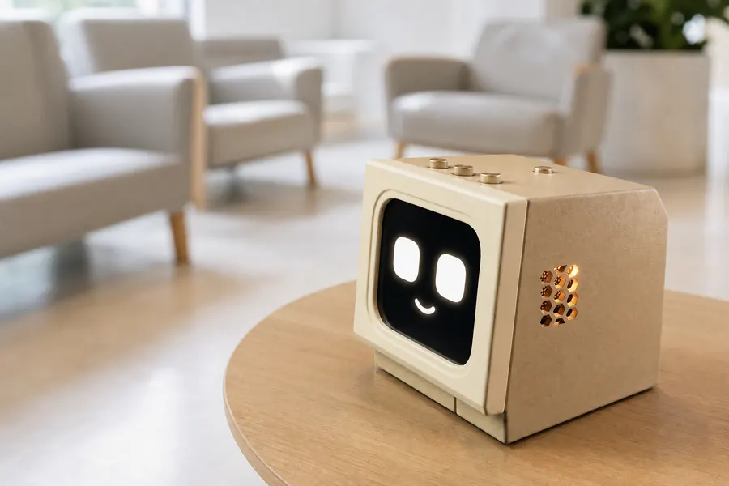
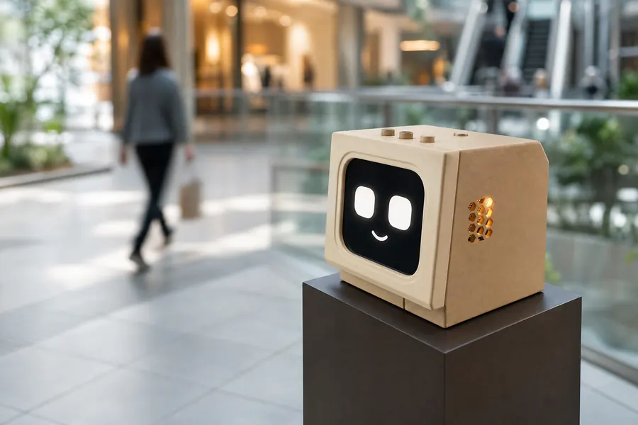
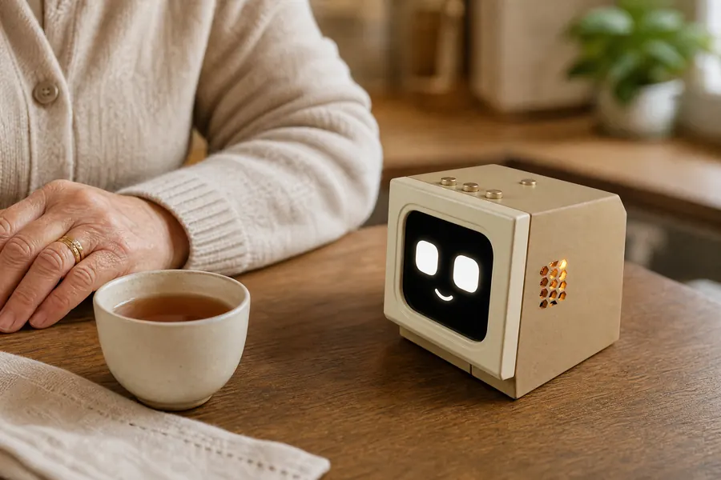

öğrenci
Ders anlatılırken not tutmak
Hoca hızlı anlatıyor, yazmaya çalışırken yarısını kaçırıyorsun. İva dinlediklerini yazıya döküyor.
"İva, not al: final konuları 4. üniteden başlıyor."
modeli sürükle — sallarsan başı döner, ters çevirirsen hoşuna gitmez · ekran, geliştirilmekte olan cihazın tarayıcıdaki simülasyonu
sen konuş,
iva halletsin.
Notlar dağılıyor, tarihler unutuluyor,
danışmadaki kuyruk uzuyor.
İva bunların hepsine tek bir yerden, konuşarak cevap veriyor. Masanın üstünde duruyor; sen konuşurken dinliyor, yazıya döküyor, zamanı gelince hatırlatıyor.
Ekrana bakmak, klavyeye uzanmak ya da bir menüde gezinmek gerekmiyor. Tek yapman gereken cümleyi kurmak.

Hoca hızlı anlatıyor, yazmaya çalışırken yarısını kaçırıyorsun. İva dinlediklerini yazıya döküyor.

Toplantı biter bitmez kararları ve kimin ne yapacağını sesle kaydediyorsun.

Ödev, vize, proje… hepsi söylediğin anda takvimine giriyor, zamanı gelince hatırlatılıyor.

Telefonu eline almadan Pomodoro başlatıyorsun. İva süreyi tutuyor, molayı hatırlatıyor.

Karşında biri olmadan İngilizce konuşmak zor. İva sohbet ediyor, hatalarını düzeltiyor.

Gün boyu yüzlerce kez sorulan yön sorularını İva karşılıyor, personel asıl işine dönüyor.

Ortak dokunulan yüzey yok. Randevu saatini ya da hazırlık talimatını sorman yeterli.

Kiosk menüsünde kaybolmak yerine mağazanın adını söylüyorsun; İva yönü tarif ediyor.

Görme zorluğu yaşayan ya da küçük yazıları okuyamayan biri için ses en doğal arayüz.
Masanın köşesine sığacak kadar küçük.
Günü değiştirecek kadar işe yarar.
İva avuç içi büyüklüğünde bir cihaz olarak tasarlanıyor: masanın üstünde, kliniğin danışmasında ya da AVM'nin ortasında aynı işi görecek kadar küçük.
Bir kiosk'un kapladığı yere birden fazla İva kurulabilir — üstelik kimsenin ekrana dokunmasına gerek kalmadan.
Kapalı kutu değil.
Ne olduğunu görebilirsin.
İva, ESP32-S3 tabanlı açık bir donanım mimarisi üzerine kuruluyor: mikrofon dizisi, hoparlör ve 1.69 inçlik küçük bir ekran.
Modeli sürükleyerek çevir, "parçalar" görünümüne geçip kutunun içinde ne olduğunu tek tek incele.
Konuştuğun şeye göre yüzü değişir.
Küçük ekranındaki yüz, konuşmanın gidişatına göre gülüyor, şaşırıyor, göz kırpıyor. Oyun oynarken ekran zarı, çarkı, doğru-yanlış işaretlerini de gösteriyor; cihazla konuşmak bir menüyle uğraşmaktan çok, birine seslenmeye benziyor.
Bir ifadeye dokun: hem yandaki ekran hem de yukarıdaki 3B model o ifadeye geçsin. Aynı ifadeye tekrar dokunursan otomatik akışa döner.
Dokunmatik kiosk'a sesli alternatif.
Büyük ekranlı yönlendirme kiosk'ları pahalı, yer kaplıyor ve herkes aynı yüzeye dokunuyor. Aynı işi konuşarak yapmak çoğu senaryoda daha hızlı, daha hijyenik ve daha erişilebilir.

Ayarların tek ekranda.
Endüstriyel tasarım, donanım seçimi ve Türkçe sesli etkileşim akışı.
Çalışan prototip, masaüstü uygulaması ve gerçek ortamda kullanım denemeleri.
Kurumsal pilot uygulamalar, üretim planı ve fiyatlandırmanın açıklanması.
İva henüz satışta değil.
Şu an prototip geliştirme ve saha testi aşamasındayız. Paketler, fiyatlar ve teslim koşulları ürün hazır olduğunda burada yayınlanacak.
Satış yok, ön sipariş yok, ödeme yok — sadece haber.
Hayır. İva şu anda geliştirme aşamasında bir prototip; satışa çıkmadı ve ön sipariş almıyoruz. Hazır olduğunda paketler ve fiyatlar bu sayfada yayınlanacak.
Kesin bir tarih vermiyoruz, çünkü henüz saha testi aşamasındayız. Gerçekçi bir takvim oluştuğunda ilk olarak bekleme listesindeki kişilere haber vereceğiz.
Evet, baştan sona Türkçe: hem seni anlar hem de doğal Türkçe yanıt verir. Uyandırma kelimesini de istediğin gibi değiştirebilirsin.
Mimari, tüm işlemin kendi bilgisayarında veya kurum içi bir sunucuda çalışmasına izin verecek şekilde tasarlanıyor. Bu modda notların ve konuşmaların buluta gitmez.
Evet, en çok ihtiyacımız olan şey bu. Hastane, poliklinik, AVM veya benzeri bir ortamda denemek isterseniz bize yazın; senaryoyu birlikte kurgulayalım.
Yönlendirme, sık sorulan sorular ve bilgilendirme gibi senaryolarda evet. İmza, ödeme veya belge yazdırma gibi fiziksel çıktı gerektiren işlemler için kiosk hâlâ gerekli — İva bu senaryolarda kiosk'un yükünü hafifletir.
Prototip ESP32-S3 tabanlı bir kart, mikrofon dizisi, hoparlör ve 1.69 inçlik ekran üzerine kurulu. "İçini aç" bölümündeki 3B modelden parçaları inceleyebilirsin.
Bekleme listesine katıl; prototipten çıkıp gerçek bir ürüne dönüştüğünde, fiyatlar ve teslim koşulları belli olduğunda ilk haber sana gelsin.
Bir sorunuz olursa lütfen iletişime geçmekten kaçınmayın.